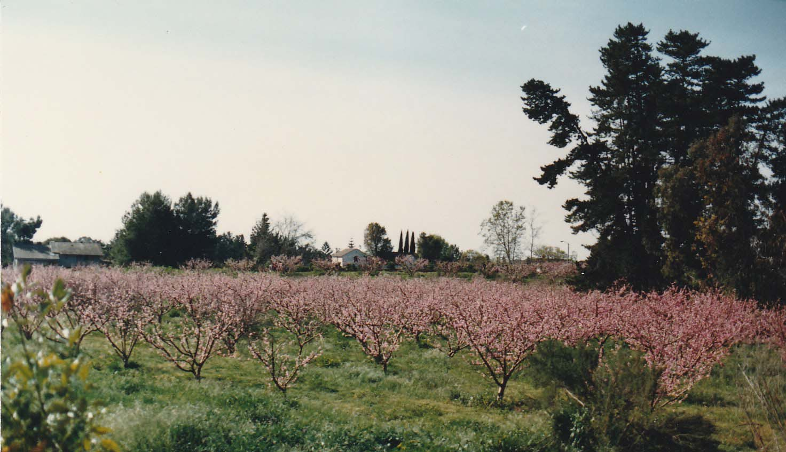

Goleta, CA · Case No. 25-0001-CUP
This permit follows the land, not the owner.
Learn MoreThe City of Goleta is reviewing a Conditional Use Permit for Fairview Gardens, a permanent land use entitlement that binds every future owner to whatever uses are approved today. On July 13, 2026, the Planning Commission will decide what this land is permitted to be for generations to come, regardless of who owns it.
The application covers two distinct categories of use. The first includes the farm operations, educational programs, and community activities that Fairview Gardens has long been known for, and that this community broadly supports. The second is a large-scale event operation that the application describes in broad terms, with few definitions and no restrictions on who can attend, how events are priced, or what purposes they serve.
| Use | Frequency | Max Attendees | Hours |
|---|---|---|---|
| Seasonal Farm Operations | Year-round | Staff only | Varies |
| Farm Stand | Year-round daily | Rolling | 9AM-9PM |
| On-Site Employee Housing | Permanent | 9 units | N/A |
| School Tours | 3x/week, school year | 100 | M-F 9AM-3PM |
| After School Program | 5x/week, school year | 40 | M-F 3:30-5:30PM |
| Pre-K Sprouts Program | 5x/week, year-round | 25 | M-F 9AM-3:45PM |
| Spring Break Camp | 1x/year | 50 | M-F 9AM-3:45PM |
| Summer Camp | 1x/week, summer | 75 | M-F 9AM-3:45PM |
| Kids Gardening Workshops | 4x/year | 25 | M-F 9AM-3:45PM |
| Adult Workshops | 20x/month | 100 | M-F 9AM-3:45PM; Weekends to 9PM |
| Self-Guided Tours | Daily | 5/day | Daylight hours |
| Guided Tours | 3x/week | 30 | M-F 9AM-3PM; Weekends 9AM-5PM |
| Total educational & agricultural sessions | ~1,324/year |
| Use | Frequency | Max Attendees | Hours |
|---|---|---|---|
| Café | Daily | Rolling | 9AM-3:45PM |
| Farm-to-Table Meals | 5x/month (60/year) | 250 | Any day 6:15-9PM |
| Fundraising Events | 4x/year | 500 | Weekdays 6:15-9PM; Sat 12-9PM; Sun 1-9PM |
| Seasonal Events | 4x/year | 500 | Sat 10AM-10PM; Sun 1-10PM |
| Open Houses | 4x/year | 750 | Sat 10AM-10PM; Sun 1-10PM |
| Lectures | 8x/year | 500 | Any day 6:15-9PM |
| Farm Field Days | 6x/year | 250 | Weekends 9AM-5PM |
| Quarterly Festivals | 4x/year | 800 | Sat 10AM-10PM; Sun 1-10PM |
| Annual Festival | 1x/year | 1,500 | Sat 10AM-10PM; Sun 1-10PM |
| Total discrete events | 91/year |
Nothing in this application defines what a farm-to-table meal is, requires these events to be open to the public, or prohibits a future owner from renting this property for private dinners, weddings, or corporate events. As written, nothing prevents it. That is not a farm application. That is a venue application on agricultural land.
The Planning Commission has a choice: approve a farm permit, or approve a venue permit on agricultural land. What follows is our position on which one this should be.
We believe Fairview Gardens can be something extraordinary. A working farm, open to the community, rooted in education and agriculture.
We support the following uses at Fairview Gardens:
Our concerns are specific. As written, this application authorizes two things that have no place on this land: a private event operation with no public benefit requirement, and amplified sound in a residential neighborhood.
Nothing in this application:
As written, this application makes no distinction between a community farm dinner and a private wedding. That ambiguity follows this land forever.
The application proposes events with amplified music until 10PM on weekends, in a residential neighborhood. Nothing in this application:
The applicant's own acoustics consultant confirms that concert-level amplification should not be permitted anywhere on this site. As written, the application contains nothing that prevents it.
We are asking the Planning Commission to consider conditions that make this a farm permit, not a venue permit.
The application includes nine units of permanent, on-site farm employee housing. We support housing for farm staff — it is difficult to run a working farm in Goleta without it. Our concern is narrower and more specific: where that housing is sited on a 12.23-acre parcel governed by an agricultural conservation easement.
Nine units of on-site housing, in two very different locations:
Eight of the nine proposed units — the large majority of new permanent housing — are sited away from the farmhouse, in a separate agricultural support zone rather than consolidated near the site's existing development footprint. Nothing in the application explains why this location was chosen over siting closer to the farmhouse core, where housing would sit alongside other new and existing structures rather than extending permanent development into a currently active or less-disturbed part of the farm.
A conservation easement requires at least 88% of this parcel to remain in active agricultural production. Where nine permanent dwelling units go is not a minor site-plan detail — it is a decision about which part of this working farm becomes, forever, residential.
We support on-site farm worker housing. We are asking the Planning Commission to require the applicant to justify — or reconsider — where it goes.
The Planning Commission makes its final decision on July 13, 2026. Comments submitted before July 9 will be distributed to the Planning Commission before their decision. Use the tool below to compose your comment. You will have a chance to review and edit everything before it sends. It goes from your own email address, in your own name, directly to the City.
Written comments enter the record. A room full of engaged residents sends a signal that no email can.
Time and Zoom details to be announced. Check cityofgoleta.org for updates.
This is the hearing where the permit will be approved, conditioned, or denied. Your presence here is the most impactful action you can take.
Written comments submitted before the hearing will be distributed to the Planning Commission. Submit yours below.
Optional, but adding your address shows the Commission you are a local resident. Comments from nearby neighbors carry particular weight on traffic and noise.
This opens your email client with your comment pre-populated. Your comment is sent from your own email address and entered into the official public record.
Read the application for yourself. These are the primary source documents behind everything on this site.